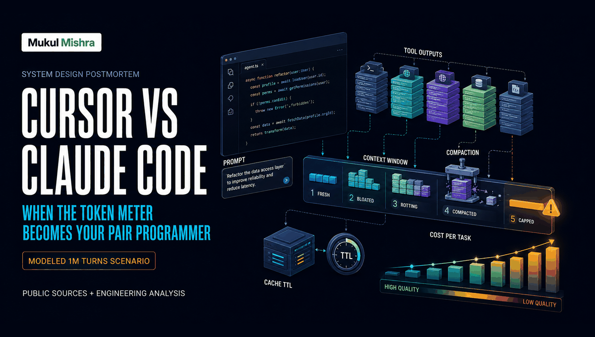
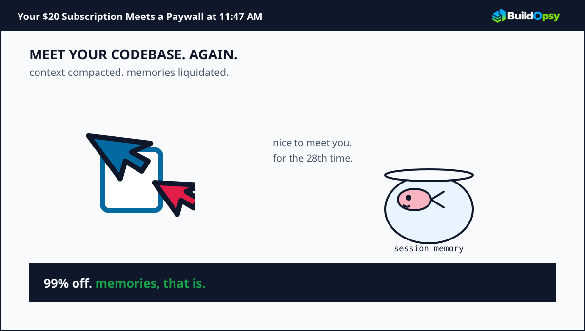
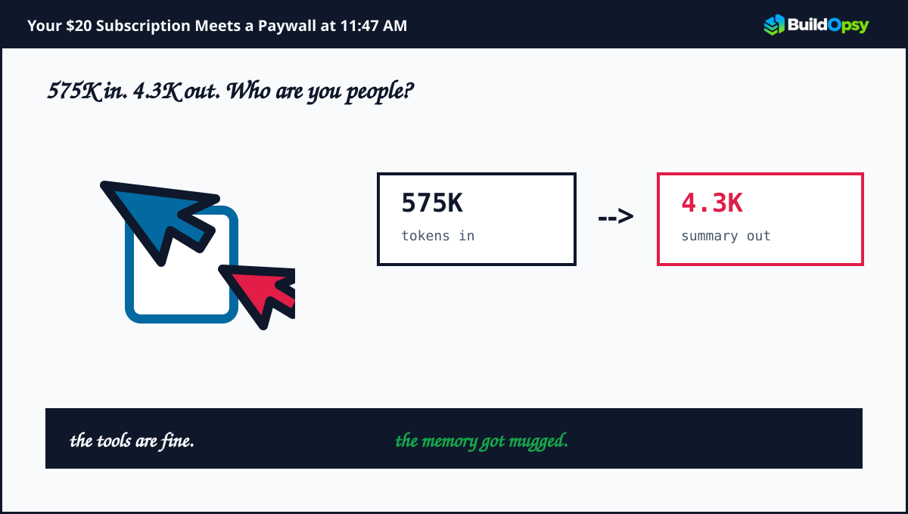

1. The Five Words That Kill Flow State
Every developer using Cursor or Claude Code daily knows the moment. The agent has read twenty files. It finally understands the auth module. It is three edits away from done. Then the limit message arrives and your morning splits in two. There is the work and there is the meter running underneath the work.
Comment threads blame everything. The model is greedy. The vendor is greedy. The cache expired. The intern left a test log in the repo. Most of the advice online treats the meter like weather. Something that happens to you. Meters like this one are never weather. They are architecture with a billing page.
So here is the postmortem nobody asked for but every daily user needs. They built agentic coding that replays your entire session on every single turn. The big issue is that context behaves like a recurring charge with a rising rate, while the pricing page talks like you are buying countable requests. We are doing the postmortem on that mismatch, with math, because anger without arithmetic is just a comment thread.
2. Productivity Math: What the Limit Actually Costs You
Start with the developer, not the dashboard. A mid level engineer costs roughly $75 per hour fully loaded. A $20 monthly subscription looks like pocket change next to that. It breaks even if it saves about sixteen minutes in an entire month. Of course it pays for itself. That was never the real question.
The real question is what happens after the subscription stops covering the work. Take a heavy agent day. Three long sessions, each burning roughly $4 of model compute at API rates. That is $12 in one day. Over twenty working days that pace becomes $240 a month, twelve times the sticker price. Cursor documents exactly this shape. Daily agent users typically land near $60 to $100 of total monthly usage and power users running parallel agents pass $200. The $20 is an entry ticket. The meter decides the final bill.
Now price the interruption itself. A limit hit mid refactor costs thirty to forty five minutes of flow state. The agent loses momentum, you lose the mental model and the restart tax lands on the most expensive resource in the building, which is you. At $75 an hour, two 30-to-45-minute interruptions a week cost $325 to $490 a month in lost focus alone. Add the overage spend and the true monthly cost of heavy agentic coding lands near $385 to $750 per developer. Still worth it for the output, probably. But let us stop pretending the tool costs twenty dollars. It costs twenty dollars and whatever your attention is worth at the exact moment the meter says no.
| Monthly picture | Light user | Heavy agent user |
|---|---|---|
| Subscription sticker | $20 | $20 to $60 |
| Model overage pace | Near zero | $40 to $200 |
| Flow state lost to limits | Rare | $325 to $490 in focus time |
| True monthly shape | About $20 | $385 to $750 |
3. The Two Machines You Are Actually Paying For
Cursor and Claude Code look like one category and bill like two different philosophies. Cursor sells monthly pools of model compute. Pro at $20 carries about $20 of third party model usage and a generous first party pool. Pro Plus at $60 carries about $70. Ultra at $200 carries about $400. Teams seats add a $0.25 per million token rate on third party routes. When the pool empties, eligible plans keep going on pay as you go at the same API rates. Nothing quietly downgrades. The meter just keeps running with your permission.
Claude Code sells allowance windows instead. A rolling five hour session cap for burst protection, a weekly cap for total volume and a separate Opus allowance on top. Pro at $20 gets roughly 10 to 40 prompts per five hours. Max plans multiply the allowance by 5x or 20x. Switching models does not restore a spent window, because consumption tracks tokens, not turns. Hitting the Opus allowance is the one exception where switching models keeps you working.
Both vendors meter the same underlying fuel. A typical agent prompt with full repo context fires 50K to 200K input tokens, because the harness pulls surrounding files, edits and diffs into every call. On Sonnet class pricing near $3 per million input tokens, that single prompt costs $0.15 to $0.60 before a word of output. On Opus class pricing near $15 per million, the same prompt costs $0.75 to $3.00. Output tokens cost roughly five times input. One wrong 400 line diff that you revert and regenerate bills you twice for the same lesson, and the turns spent arguing about it.
4. Why Tokens Confuse Everyone, Including Smart People
Tokens get misunderstood because three different scarcities wear the same costume. Usage limits cap how much you consume over time. Context limits cap how long one conversation can grow. Cache behavior decides what each token costs. Developers hit all three in one week and file them under one feeling. The tool feels stingy. The fixes for each scarcity are opposites, which is why generic advice keeps failing.
A full window is fixed by clearing or compacting. Waiting does nothing. An exhausted allowance is fixed by waiting or paying. A fresh conversation does nothing. A cache miss is fixed by session hygiene. Complaining does nothing. Anthropic docs say this plainly, yet experienced engineers mix them up every week, because all three failures arrive wearing the same tired message about limits.
The cruelest stage is the third one. Research on long-context agents keeps finding the same pattern: the part of the window a step actually uses stays small as the window fills. A 2026 LangWatch case study of 201 audited steps measured active context at 7,949 to 8,452 tokens while the median window grew from 38,886 to 644,962. As a share, useful context fell from 47.5 percent below 50K to 2.5 percent above 600K. The study covers one practitioner's 162-day fleet, so read the shape as a strong case study rather than a controlled result. Everything beyond the active set is mostly inert weight you pay to reprocess. Adding tokens past the useful frontier does not add understanding. It adds distraction at full price.

5. Postmortem: Why the Architecture Burns Context
An agentic coding session is a loop. The model emits a tool call, the harness runs it, the result gets appended to the conversation and the entire conversation goes back in on the next turn. Context is therefore not a tank that drains. It is a subscription that reprices upward every step. Early steps add about 3,200 tokens each. Later steps settle near 1,470. Total spend grows faster than linear because every step re purchases the history.
Then comes the compaction cliff, the part vendors describe gently and researchers describe with numbers. The same single-subject LangWatch study measured 873 compactions. The median event reduced a 574,875-token window to a 4,382-token summary. Slightly under 1 percent survived. The agent then spent roughly 28 steps re-reading files and rebuilding state it already knew. Operator corrections rose to 41.9 percent in the five steps after compaction against a 17.7 percent within-session baseline, while tool-error rates stayed flat at 2.6 to 3.2 percent. Read that twice. The tools are fine. The memory got mugged.
Cache economics sharpen the blade. Prompt caching discounts repeated prefixes by up to 90 percent, which rewards keeping early context frozen. But editing early context breaks the prefix and forces full price reprocessing. Compaction replaces the prefix with a summary, which breaks the cache entirely and causes a cost spike at the worst moment. Even the TTL conspires. Caches live about an hour on subscription and five minutes on usage credits or API keys. Take a lunch break mid session and your first message back reprocesses the world. The system that rewards you for never touching history also punishes you for blinking.
This is the same prefill tax I dissected in my Perplexity postmortem. Every turn reprocesses the full pile before generating anything new. Long context does not just risk quality. It taxes every future step with the weight of every past step. And the retry storms should look familiar too. My Replit teardown showed agents repeating failed tool work because task state was not idempotent. Same religion, smaller church.

6. The 1M Turn Cost Test
Normalize to one million agent turns in a month. Assume each turn carries 80K input tokens with 70K served as cache reads at $0.30 per million and 10K fresh at $3 per million, and 1.5K output tokens at $15 per million. Cache reads cost $0.021, fresh input costs $0.03, output costs $0.0225. Each turn lands near $0.074. One million turns at that rate equals $74,000 per month in model compute alone.
My proposed shape cuts the context before it cuts the model. Just in time retrieval keeps the working set near 25K tokens. Observation masking drops stale tool payloads while keeping the action record. Routine turns route to smaller models at roughly a fifth of the price. The blended turn falls to about $0.018. One million turns then cost $18,000 per month. Add $4,000 for evals dashboards and guardrails. The proposed envelope is about $22,000 per month.
| At 1M turns per month | Current shaped habit | Proposed discipline |
|---|---|---|
| Input per turn | 80K tokens | 25K tokens |
| Blended turn cost | $0.074 | $0.018 |
| Core model spend | $74,000 | $18,000 |
| Evals and guardrails | Included in chaos | $4,000 |
| Modeled monthly total | $74,000 | $22,000 |
| Difference | $52,000 per month about 70 percent lower | |
7. Proof of Work: Runnable Cost Model
Here is the exact cost model used in section 6. Copy paste run in any Python 3 environment and verify the 1M turn totals match the table.
# cost model: 1M turns current vs proposed
# each turn: 80K input tokens, 70K cache at $0.30/mi, 10K fresh at $3/mi, 1.5K output at $15/mi
# cache read cost: 70K/1M * 0.30 = 0.021
# fresh input cost: 10K/1M * 3 = 0.03
# output cost: 1.5K/1M * 15 = 0.0225
# blended turn cost: 0.021 + 0.03 + 0.0225 = 0.0735 rounded to 0.074
turns = 1_000_000
per_turn = 0.021 + 0.03 + 0.0225 # 0.0735
current_total = turns * per_turn
# proposed: 25K input, observation masking, routine to smaller model at roughly a fifth of the price
# new blended: ~0.018 per turn
proposed_per_turn = 0.018
proposed_total = turns * proposed_per_turn
savings = current_total - proposed_total
print(f"Current: ${current_total:,.0f} per month")
print(f"Proposed: ${proposed_total:,.0f} per month")
print(f"Savings: ${savings:,.0f} per month")
The script above produces the same numbers as the table. If your run produces different values the arithmetic basis is in the comments and you can adjust the per turn constants.
Compaction cliffs and paywalls make more sense inside a curriculum. Fifteen real-failure lessons with diagrams, calculators, and interview questions. See how this one fits →
8. What Vendors Could Do Instead of Selling Bigger Buckets
First, meter the task, not just the month. Show cost per completed task with its context curve attached. Developers cannot optimize what they cannot see and a monthly pool teaches nothing about which habit burned it. A per task meter would end half the internet arguments overnight. Vendors avoid it because per task numbers would reveal how often the harness wastes the budget, not the user.
Second, make just in time the default. Keep file paths and identifiers in context. Load file bodies at read time. Claude Code already gestures this way, but every agent framework should treat full repo dumps as a failure mode. My Vercel teardown made the same point for serverless. Pay for execution, not for waiting around fully loaded.
Third, mask before you summarize. Independent research keeps finding that replacing stale tool outputs with placeholders beats full LLM summarization at roughly half the cost, without the trajectory elongation that summaries cause. Summarization should be the last resort, not the first reflex. Vendors love summarization because it looks intelligent. Masking looks boring. Boring wins.
Fourth, preserve a verbatim tail. The harm of compaction concentrates at the discontinuity where 99 percent vanishes at once. Keeping the last 30K to 60K tokens verbatim alongside the summary cuts both cost and disruption in measured studies. Expose it as a setting instead of hiding the knob. Users who cannot tune the cliff will keep falling off it.
Fifth, stop routing by advertised window. Sending a 90K session to the long context tier because the model supports a million tokens is how small tasks inherit big task pricing. Route by actual size. Bill by actual size. The GitHub issue trackers already contain this complaint in triplicate, which is the open source way of saying the bug is real.
9. The Verdict
Cursor and Claude Code earned their daily driver status. Agents that read code, run tools and iterate genuinely compress weeks of grunt work. The postmortem does not take that away. It names the price structure underneath. Every turn replays history. History grows faster than value. Compaction rescues the window by amputating the memory. Caches reward frozen prefixes and punish living sessions. Three different scarcities share one tired error message and the user pays in the one currency vendors never meter, which is attention.
The way out is not a bigger bucket. It is a stricter context diet enforced by the tools themselves. Retrieve just in time. Mask stale outputs. Preserve verbatim tails. Route by actual size. Meter per task. At the normalized million turn scale, that discipline is worth about $52,000 a month in this model. For a fifty person engineering org, it is the difference between AI leverage and AI landlordship.
The cliffhanger writes itself. Agent fleets multiply every one of these curves, because each teammate carries its own window and its own bill. One developer hitting a limit is an annoyance. Ten agents hitting limits in parallel is a capacity plan. The vendors selling bigger buckets today will eventually have to sell smaller appetites. The only question is whether they do it before your finance team notices.
You are not running out of intelligence. You are running out of remembering.
10. Keep Reading the Postmortem Series
If the meter is your enemy, the rest of the series maps the same war on other fronts. My Perplexity teardown covers the prefill tax behind every AI answer. My Vercel teardown covers paying for idle wait as if it were work. My Replit postmortem covers agent retry storms that bill you for learning nothing. Same religion, different crime scenes.
Sources and Method
Product limits, pricing, and context behavior are drawn from the official docs linked below. Cost figures model one million turns using the assumptions in the analysis. The compaction and active-context figures come from LangWatch's 162-day, single-practitioner case study; the shapes are more portable than its constants. The 11:47 AM scene is a composite, not a logged event.
- LangWatch Research: Finding the Optimal Context Window for Coding Agents (Aug 2, 2026)
- Cursor Docs: Models and Pricing
- Cursor: Pricing Plans
- Anthropic Help Center: Models, Usage and Limits in Claude Code
- Claude Code Docs: Costs and Rate Limits
- Anthropic Help Center: Usage and Length Limits
- Anthropic Engineering: Effective Context Engineering for AI Agents